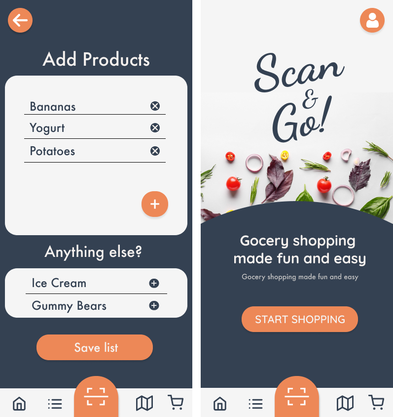
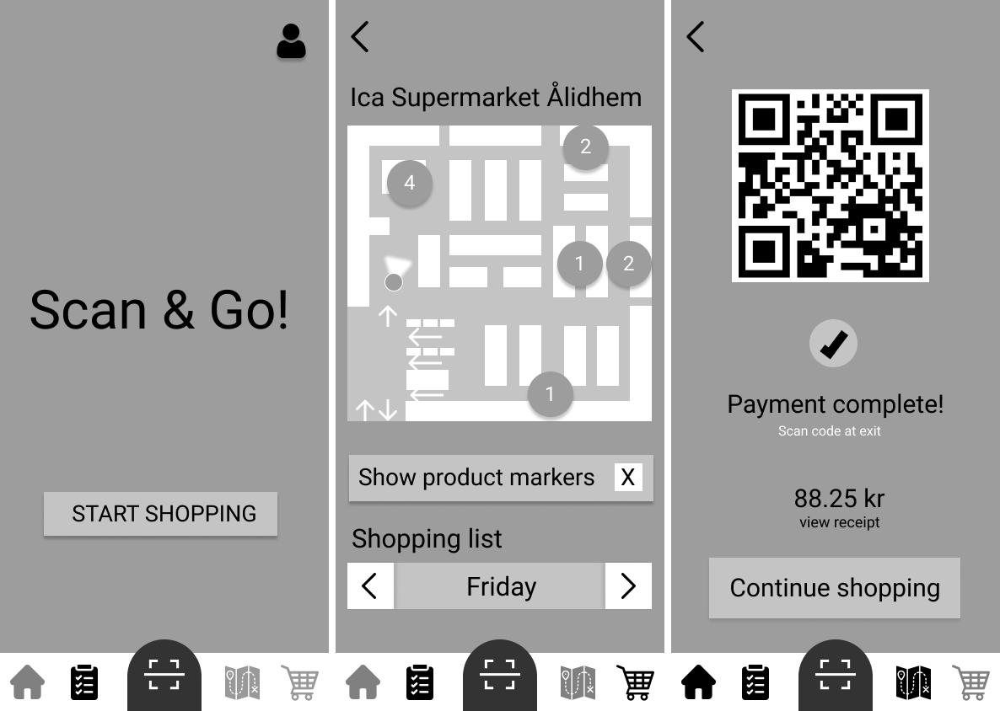
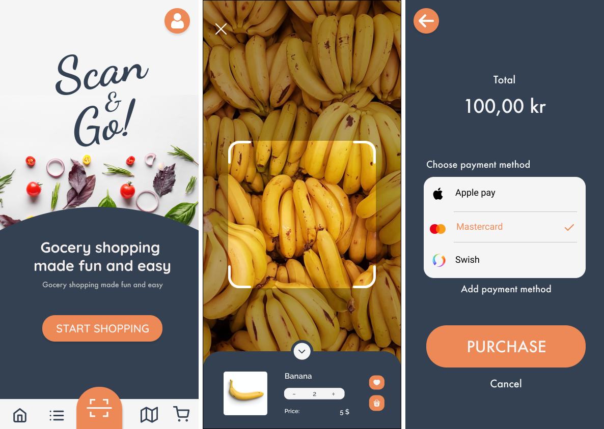

Scan&Go
This project was developed during the course Human-Computer Interaction with Emphasis on Cognition and Design. The task was to create or improve a system where computers and humans work together to perform a task. Scan&Go aims to improve efficiency and convenience in grocery shopping by moving the traditional self service shopping system to smartphone devices that most users are way more familiar with. Scan&Go shows the user which stores have the products they are looking for and also acts as a guide to find them in that store, it also allows the user to scan products and pay with their phone.
- Duration
- Role
- Tools
August 2021 - November 2021 (50%)
UX-designer
Figma


The Process
The design process started with researching the target audience. Since the application needed to appeal to a very wide age group a lot of different perspectives had to be taken into consideration. Based on user requests wireframes and an interactive lo-fi prototype was created. The prototype was used for end user testing. In the tests participants were given common tasks that are performed while grocery shopping and asked to perform them using the applicaion. Their emotional response and perceived workload was measured using emocards and the NASA Task Load Index respectively. Due to time constraints only one such iteration was performed before development of a hi-fi prototype started.
The Result
In the resulting Scan&Go application users can create shopping lists, they are then given suggestions of where to go shopping based on their location data and available information about what the local retailers have in store. Well inside the store a map of the stores layout can be used to navigate to the isles where the products in the active shopping list are located, saving the users time and discouraging unnecessary spending. The application can also be used to scan QR-codes or use machine learning to recognize products and add them to a virtual shopping cart. The products can then be paid for in the app eliminating the need to stand in line for checkout.
